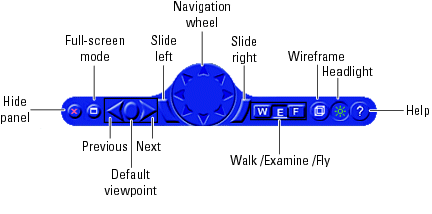

Navigation Panel
The Orbisnap navigation panel has navigation controls for some of the more commonly used navigation operations available from the menu bar. These controls include:

- Hide panel -- Toggles the navigation panel.
- Full-screen mode -- Toggles the full-screen mode.
- Next/previous viewpoint -- Toggles through the list of viewpoints.
- Return to default viewpoint -- Returns focus to original default viewpoint.
- Slide left/right -- Slides the view left or right.
- Navigation wheel -- Moves view in one of eight directions.
- Navigation method -- Manages scene navigation.
- Wireframe toggle -- Toggles scene wireframe rendering.
- Headlight toggle -- Toggles camera headlight.
- Help -- Invokes the Orbisnap online help.
Navigation
You can navigate around a virtual world using the menu bar, toolbar, navigation panel, mouse, and keyboard.
Navigation view -- You can change the camera position. From the menu bar, select the Navigation menu Straighten Up option. Alternatively, you can click the Straighten Up control from the toolbar or press F9 on the keyboard. This option resets the camera so that it points straight ahead.
Navigation methods -- Navigation with the mouse depends on the navigation method you select and the navigation zone you are in when you first click and hold down the mouse button. You can set the navigation method using one of the following:
- From the menu bar, select the Navigation menu Method option. This option provides three choices,
Walk, Examine, or Fly. See the table Mouse Navigation.
- From the toolbar, select the drop-down menu that displays the navigation options
Walk, Examine, and Fly.
- From the navigation panel, click the W, E, or F buttons.
- From the keyboard, press Shift+W, Shift+E, or Shift+F.
Navigation zones -- You can view the navigation zones for a virtual world through the menu bar or keyboard.
From the menu bar, select the View menu Navigation Zones option. The virtual world changes as the navigation zones are toggled on and appear in the virtual world. Alternatively, from the keyboard, press the F7 key.
The following table summarizes the behavior associated with the movement modes and navigation zones when you use your mouse to navigate through a virtual world. Turn the navigation zones on and experiment by clicking and dragging your mouse in the different zones of a virtual world.
Mouse Navigation
Movement Mode
|
Zone and Description
|
Walk
|
Outer -- Click and drag the mouse up, down, left, or right to slide the camera in any of these directions in a single plane.
Inner -- Click and drag the mouse up and down to move forward and backward. Drag the mouse left and right to turn left or right.
|
Examine
|
Outer -- Click and drag the mouse up and down to move forward and backward. Drag the mouse left and right to slide left or right.
Inner -- Click and drag the mouse to rotate the viewpoint around the origin of the scene.
|
Fly
|
Outer -- Click and drag the mouse to tilt the view either left or right.
Inner -- Click and drag the mouse to pan the camera up, down, left, or right within the scene.
Center -- Click and drag the mouse up and down to move forward and backward. Move the mouse left or right to turn in either of these directions.
|
If your virtual world contains sensors, these sensors take precedence over mouse navigation at the sensor's location. In this case, mouse navigation is still possible through the right or middle mouse buttons.
Keyboard -- You can also use the keyboard to navigate through a virtual world. It can be faster and easier to issue a keyboard command, especially if you want to move the camera repeatedly in a single direction. The following table summarizes the keyboard commands and their associated navigation functions. Note that the letters presented do not need to be capitalized to perform their intended function.
Keyboard Navigation
Keyboard Command
|
Navigation Function
|
Backspace
|
Undo move.
|
F9
|
Straighten up and make the camera stand on the horizontal plane of its local coordinates.
|
+/-
|
Zoom in/out.
|
F6
|
Toggle the headlight on/off.
|
F7
|
Toggle the navigation zones on/off.
|
F5
|
Toggle the wireframe option on/off.
|
F8
|
Toggle the antialiasing option on/off.
|
Esc
|
Go to default viewpoint.
|
Home
|
Return to current viewpoint.
|
Page Up, Page Down
|
Move between preset viewpoints.
|
Ctrl+F
|
Toggle the full-screen mode on/off.
|
F10
|
Camera is bound/unbound from the viewpoint.
|
Shift+W
|
Set the navigation method to Walk.
|
Shift+E
|
Set the navigation method to Examine.
|
Shift+F
|
Set the navigation method to Fly.
|
Shift Up/Down Arrow
|
Move the camera forward and backward.
|
Up/Down Arrow
|
Pan the camera up and down.
|
Left/Right Arrow, Shift+Left/Right Arrow
|
Pan the camera right and left.
|
Alt+Up/Down Arrow
|
Slide up and down.
|
Alt+Left/Right Arrow
|
Slide left and right.
|
Ctrl+Left/Right/Up/Down Arrow
|
Pressing Ctrl alone acquires the examine lock at the point of intersection between the line perpendicular to the screen, coming through the center of the Orbisnap window, and the closest visible surface to the camera. Pressing the arrow keys without releasing Ctrl rotates the viewpoint about the acquired center point.
|
Shift+Alt+Left/Right Arrow
|
Tilt the camera right and left.
|
 | Toolbar | | Orbisnap Command Line |  |